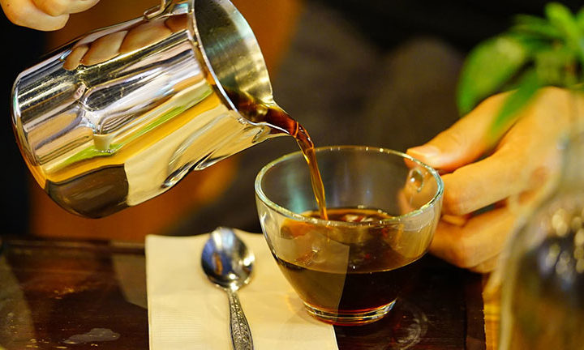
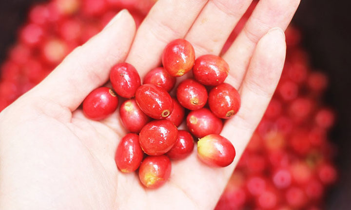
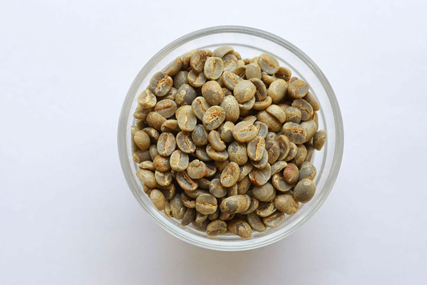

商品



コーヒー
私たちがアジアの国々を訪れ、農家さんや精製所と直接話し合い、品質向上に取り組んでいるコーヒーです。それぞれ味の特徴が異なる個性ゆたかなコーヒーをお楽しみください。
MORE→
カスカラ
カスカラとは、コーヒーの果皮を乾燥させたもの。真っ赤に熟したコーヒーチェリーを使用しています。シロップやパウダーなど、コーヒーをまるごと楽しめる商品たちです。
MORE→
コーヒー生豆
世界各国からセレクトしたコーヒーの生豆を取り扱っています。美味しさはもちろんのこと、環境やコミュニティへの配慮なども含め、独自の視点でセレクトした生豆を種類豊富にご用意しています。
MORE→
生豆の価格表
海ノ向こうコーヒーで取り扱っている生豆のラインナップや価格表をご覧いただけます。小分け（1kg・5kg）の取り扱いの他、原袋（30kg）でのお取り置きも可能です。
MORE→